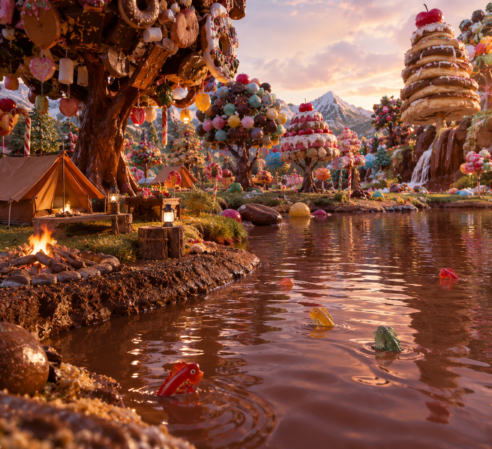

Al Oeste del Caribe, se ubica la Isla de tus sueños. Clima cálido, playas refrescantes, y una flora y fauna alucinante. Aquí encontrarás diversa especies de animales, llevando la atencipon de todos su animal nacional el gran Gato Calabaza. Famoso por su gran tamaño, su historia en el Pueblo Jengibre y los festivales dedicados en su honor.

La isla cuenta con una gran variedad de playas, desde las más tranquilas y solitarias, hasta las más concurridas y con actividades para toda la familia. Podrás disfrutar de excursiones a la famosa Cascada de Miel; senderismo por la savana de pastas; y visitas al pueblo de Jengibre, donde en la cercanía se ubica el lago de Chocolate.
